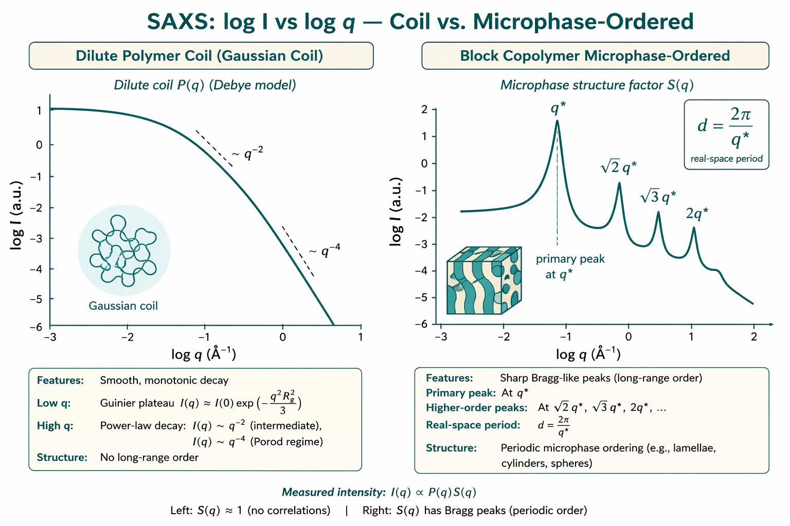

聚合物与嵌段共聚物（SAS）
Chain conformation, microphase peaks, and soft-matter vs BioSAS mindset
本导读以 Hamley & Castelletto（2004）Small-angle scattering of block copolymers（DOI: 10.1016/j.progpolymsci.2004.06.001）为骨架，结合 Trask, Hernandez & Cochran（2017）Oxford 手册章、Hall（1989）结晶聚合物 SAXS 章，以及 Müller-Buschbaum（2016）BCP 薄膜 GISAXS 综述，说明聚合物链构象（$R_g$、无规线团形式因子）、嵌段共聚物微相分离峰（$d$-spacing）、胶束/液晶相与半结晶畴如何读，以及软物质思维与 BioSAS 稀溶液范式的分野。薄膜几何请转入 GISAXS 专题。
问题是什么
聚合物与嵌段共聚物（block copolymer, BCP）的 SAS 问题通常分三层（Hamley 2004；Trask 2017）：
- 单链 / 稀溶液构象： 均聚物或未微相分离的无规线团，主信号来自形式因子 $P(q)$；关心回转半径 $R_g$、Flory 指数 $\nu$、溶剂品质（$\Theta$ / 良溶剂）。浓溶液进入半稀释区时 $S(q)$ 不再可忽略。
- 微相分离与有序介观相： 嵌段因 Flory–Huggins 参数 $\chi$ 与聚合度 $N$（组合为 $\chi N$）驱动而局域相分离，却因共价键无法宏观分相；透射 SAXS/SANS 出现 Bragg / 相关峰，峰位给出畴间距 $d$，峰列给出对称性（lamellae、hex、bcc、gyroid 等）。无序相（disordered, DIS）在 $q^*$ 附近仍有宽相关峰（correlation hole），与有序 Bragg 峰的解读不同。
- 溶液自组装与结晶： 选择性溶剂中 BCP 形成球/柱胶束、溶致液晶相（lyotropic LC）；半结晶嵌段在 SAXS 出现片层长周期峰，常需联用 WAXS 读晶胞（Hamley 2004 §6；Hall 1989）。凝胶网络中的非均匀涨落则属另一分支（可选：Shibayama 2008）。
与 BioSAS 的关键差异：生物稀溶液默认 $S(q)\approx 1$、追求单一 $p(r)$ / 寡聚态；聚合物熔体、浓溶液、有序 BCP 几乎总是「形式因子 × 结构因子」问题，且多分散、衬度匹配、剪切取向、热历史是常态。把 BCP 相关峰误当成「大分子 Guinier 上翘」、把浓溶液 $S(q)$ 压制当聚集、或把结晶片层峰当微相 Bragg 峰，是最常见的岔路错误（见 09 应用岔路）。

文献主线
Hamley & Castelletto 2004：BCP 的 SAS 总图
该综述按「熔体微相 → 球/柱胶束溶液 → 溶致液晶相 → 半结晶嵌段」组织，强调 SAXS 主用于形貌判定，SANS 靠氘标定链构象与选择性「点亮」嵌段。核心要点：
- 熔体 Leibler RPA： 无序相结构因子 $S(q)=N/[F(x)-2\chi N]$，$x=q^2R_g^2$；$\chi N$ 趋近 spinodal 时 $S(q^*)$ 发散，对应 ODT 附近宽峰。强分凝样品可见完整 Bragg 列，弱分凝仅低阶峰，需 TEM 或剪切取向补证。
- 峰列定相： lamellae $1{:}2{:}3\ldots$；hex $1{:}\sqrt{3}{:}2\ldots$；bcc $1{:}\sqrt{2}{:}\sqrt{3}\ldots$；gyroid 等网络相峰更密、更弱。偶数峰可因对称性消光或形式因子极小值而缺失——勿单凭缺失判「无序」。
- 非平衡与动力学： HPL、HML 等 perforated lamellar 可为 gyroid 前驱；相变路径依赖退火史与剪切（LAOS 取向可增强峰信息）。同步辐射时间分辨可追踪 ODT、结晶与胶束化动力学。
- 溶液胶束： 稀溶液 $I\propto n P(q)S(q)$（$n$ 为数密度）；浓胶束/液晶相再次出现 Bragg 峰，须区分胶束间 $S(q)$ 与单胶束 $P(q)$。
- SAXS 与 SANS 互补：X 射线靠电子密度差；中子靠氘化嵌段 / 溶剂衬度匹配拆分配方（见 SANS 衬度专题）。
Trask, Hernandez & Cochran 2017：热力学—动力学—散射
Oxford Soft Condensed Matter 手册章（DOI: 10.1093/oxfordhb/9780199667925.013.7）把 Flory–Huggins $\chi_{AB}$、$N$、体积分数 $f$ 与散射放在同一框架：
- 分凝区： 弱分凝（$\chi N\sim 10$–20，ODT 附近）用 Leibler 弱分凝理论；强分凝（$\chi N\sim 100$）界面趋锐、畴间距标度 $\sim N^{2/3}$；中间区需自洽场（SCFT）等。
- 相图与散射： 对称 diblock 在 $\chi N\approx 10.5$、$f=0.5$ 附近有 Landau 临界点；非对称组成 ODT 常为弱一级相变（disorder → bcc 等）。变温 SAXS 可绘相边界，峰宽反映缺陷与关联长度。
- 动力学与加工： 扩散、黏弹性、剪切加工与自组装动力学决定「能否看到平衡峰」。快速淬火可捕获亚稳相；流变–SAXS 联用可读取向与应变响应。
适合作为「为何出现这些峰」的热力学入口，再回到 Hamley 的实验峰列读图。
Hall 1989：结晶聚合物的片层 SAXS
半结晶聚合物（含结晶性嵌段）的 SAXS 与 BCP 微相峰不同：信号来自晶区（$\rho_c$）与非晶区（$\rho_a$）交替的片层堆叠，取向纤维上常见 meridional 长周期峰（two-point / four-point 图样）。Hall 综述的两相模型给出：
- Porod 不变量 $Q$： $Q=\int s^2 I(s)\,\mathrm{d}s \propto (\rho_c-\rho_a)^2\omega_c\omega_a$，联系晶相体积分数与密度差；需额外输入才能单独解 $\omega_c$。
- 一维相关函数 $\gamma(r)$： 由 $I(s)$ Fourier 变换得到，峰位给出片层/非晶层厚度分布；对界面过渡区、相内密度涨落敏感。
- 准晶（paracrystalline）模型： 片层厚度与周期存在分布时，高阶峰变宽、甚至只剩单宽峰——与 BCP 多分散抹峰机制类似，但物理图像不同。
半结晶 BCP 须同时看 SAXS 长周期与 WAXS 晶胞峰（Hamley 2004 §6），勿把片层 $d$ 与微相 $d$ 混为一谈。
Müller-Buschbaum 2016：薄膜 BCP → GISAXS
体相透射 SAXS 给出粉末平均峰列；衬底上的 BCP 薄膜常有面内/面外取向、埋藏界面与厚度约束，须用掠入射几何。综述 GISAXS and GISANS as metrology…（DOI: 10.1016/j.eurpolymj.2016.04.007）说明如何从 2D 图样读面内周期、厚度与三维形貌——站内细节见 GISAXS（DWBA、Yoneda 带）。
关键公式与结论
无规线团形式因子与 $R_g$
理想高斯链（Debye）形式因子：
$$P_{\mathrm{Debye}}(q)=\frac{2}{u^2}\bigl(e^{-u}-1+u\bigr),\quad u=q^2 R_g^2.$$低 $q$ 极限与一般粒子相同：$P(q)\approx 1 - q^2 R_g^2/3$，故Guinier 分析仍给出$R_g$。中间 $q$ 区理想链 $\sim q^{-2}$；排除体积（良溶剂）更接近 $\sim q^{-1/\nu}$（$\nu\approx 0.588$）。高分子量、多分散时常用 Hammouda Guinier–Porod 或 Beaucage 统一函数连接 Guinier 平台与幂律衰减（DOI: 10.1107/S0021889810015773；见 06 Guinier / Porod）。
微相峰与 $d$-spacing
有序介观相主峰位置 $q^*$ 与特征间距：
$$d = \frac{2\pi}{q^*}.$$高次峰相对位置 $q/q^*$ 用于判别对称性（Hamley 2004；Trask 2017）：
| 形貌 | 典型 $q/q^*$ 列 | 备注 |
|---|---|---|
| 层状（lamellae） | $1 : 2 : 3 : 4\ldots$ | 一维周期；取向样品强度高度各向异性 |
| 六方柱（HEX） | $1 : \sqrt{3} : 2 : \sqrt{7}\ldots$ | $d_{10}=2\pi/q^*$；柱间距 $a=2d_{10}/\sqrt{3}$ |
| 体心立方球（BCC） | $1 : \sqrt{2} : \sqrt{3} : 2\ldots$ | 弱峰易被多分散/缺陷抹平 |
| Gyroid 等网络 | 特征比更密、峰弱 | 常需与 TEM/流变联判；勿单靠两峰定相 |
峰宽反映关联长度与缺陷密度；升温过 ODT（order–disorder transition）时主峰塌为宽相关峰（correlation hole），$S(q)$ 仍可能在 $q^*$ 附近有宽极大——勿与有序 Bragg 峰混淆。Trask 2017 指出：ODT 附近峰形对组成波动敏感，变温扫描比单点测量更能约束相界。
胶束溶液与溶致相：$P(q)$ 与 $S(q)$ 再分离
选择性溶剂中 AB 嵌段形成核–壳胶束（Hamley 2004 §3–4）。稀溶液：
$$I(q)=n\,(\Delta\rho)^2\,P_{\mathrm{mic}}(q)\,S_{\mathrm{inter}}(q),$$$P_{\mathrm{mic}}(q)$ 描述单胶束核/冠形状；$S_{\mathrm{inter}}(q)$ 描述胶束间距（浓溶液出现 $q^*$ 峰）。柱胶束、囊泡与 hex/cubic 液晶相的峰列规则与熔体类似，但溶剂分数与曲率使相界偏移。溶致相在剪切下高度各向异性（§5.3），须扇区积分或取向样品，勿全环平均。
$P(q)$ 与 $S(q)$：软物质默认分解
体相 / 浓体系常用
$$I(q) \propto (\Delta\rho)^2\,P(q)\,S(q),$$其中 $P(q)$ 描述畴/链的形状与尺寸，$S(q)$（结构因子）携带间距与有序。稀溶液线团：$S(q)\to 1$；有序 BCP：峰列主导 $S(q)$。界面锐度进入高 $q$ 的Porod 区（理想光滑界面 $\sim q^{-4}$；漫界面衰减更快）。多分散与模型可辨识性见 08 模型与多分散。
软物质 vs BioSAS 心态对照
| 维度 | BioSAS（稀溶液蛋白等） | 聚合物 / BCP（软物质） |
|---|---|---|
| 主问题 | $M_w$、$R_g$、$p(r)$、寡聚态 | $R_g$/构象；$q^*$、$d$；相图；取向 |
| 默认 $S(q)$ | $\approx 1$（须浓度系列验证） | 常显式；$S(q)$ 峰即数据核心 |
| 衬度 | 缓冲匹配；绝对 $I(0)$ | 氘化 / 溶剂匹配拆嵌段；SAXS↔SANS |
| 多分散 | 尽量单分散或 SEC-SAS | 分子量分布常态；表观 $R_g$ 大端加权 |
| 失效信号 | 低 $q$ 上翘、缓冲错配 | 把相关峰当 Guinier；忽略取向/薄膜几何 |
| 下一站 | IFT、ATSAS、绝对标定 | 本页；薄膜 → GISAXS |
- 先定性曲线类型： 平滑 Debye/幂律 → 构象问题；尖锐峰列 → 微相 / 有序问题。两类勿混用同一套「生物 $p(r)$」流程。
- 构象路径： Guinier 得 $R_g$；中间 $q$ 幂律指数；对照 Debye / Guinier–Porod；报告多分散或 $M_w/M_n$。
- 微相路径： 标定 $q^*$ → $d=2\pi/q^*$；量高次峰比定形貌；记录温度/退火史（ODT 附近峰形剧变）。变温实验优于单点快照。
- 结晶路径： SAXS 长周期 + WAXS 晶胞；用 $Q$ 或 $\gamma(r)$ 约束晶相分数；勿与微相 $d$ 混淆。
- 衬度： SAXS 电子密度差不足时考虑 SANS + 氘化嵌段或溶剂匹配；薄膜/取向 → GISAXS。
- 相互作用： 溶液体系做稀释或盐浓度系列，确认低 $q$ 上翘/压制来自 $S(q)$ 而非杂质聚集。
- 时间分辨： 同步辐射追踪 ODT、结晶或胶束化时，记录升降温速率与剪切条件（环境设计）。
实践要点与坑
- 把 $q^*$ 相关峰当成 Guinier 区 → 如何判断： 有序/近有序样品低 $q$「鼓包」实为 $S(q)$；强行拟合 $R_g$ 会假大。先看是否存在高次峰或温度敏感峰；DIS 相宽峰在 ODT 两侧行为不同。
- 峰比不定相 → 如何判断： 仅见一峰无法区分 lamellae 与 HEX；缺峰可能因取向、形式因子消光或多分散。补 TEM/AFM、剪切取向 SAXS，或 SANS 衬度扫（薄膜则转 GISAXS）。
- 多分散抹平振荡 → 如何判断： 形式因子极小值消失、峰变宽；$R_g$ 被高分子量尾主导。报告 $M_w/M_n$ 或分布假设（08 多分散）。
- 忽略衬度 → 如何判断： 两嵌段电子密度接近时 SAXS 峰极弱，SANS 氘化后峰清晰 → 不是「无序」，是衬度问题。ABC 三嵌段若两嵌段 $\rho$ 相近，表观峰位/形貌可误导。
- 结晶峰 vs 微相峰 → 如何判断： 半结晶样品 WAXS 有晶胞峰、SAXS 长周期沿纤维轴；微相 Bragg 峰随 $\chi N$ / 溶剂而变，与熔融结晶动力学不同（Hall 1989；Hamley 2004 §6）。
- 胶束浓溶液误用稀溶液公式 → 如何判断： 低 $q$ 上翘且随浓度移动 → $S_{\mathrm{inter}}(q)$；须稀释系列或模型 $P(q)S(q)$ 联拟。
- 薄膜仍用透射心态 → 如何判断： 2D 图样有 Yoneda/镜面、条纹随 $\alpha_i$ 变 → 必须 GISAXS/DWBA。
- Porod 区误读界面 → 如何判断： 背景未扣、狭缝 smearing、或漫界面会使表观指数偏离 $-4$；结晶片层还需扣除相内涨落。
- 亚稳相当平衡相 → 如何判断： HPL 等中间相随退火时间演化；记录热史与退火时间，必要时时间分辨 SAXS。
相关词条
嵌段共聚物、 多分散性、 形式因子、 结构因子、 回转半径 $R_g$、 Guinier 分析、 衬度、 GISAXS、 Porod 定律
相关学习章
- 06 Guinier / Porod — $R_g$、幂律区与 Guinier–Porod 统一模型
- 08 模型与多分散 — $P(q)S(q)$ 可辨识性与尺寸分布
- 09 应用岔路 — Soft matter 与 GISAXS 分支导流
- GISAXS 专题 — BCP 薄膜、面内周期与 DWBA
文献列表
- Small-angle scattering of block copolymers. Ian W. Hamley, Valeria Castelletto (2004). DOI: 10.1016/j.progpolymsci.2004.06.001
- Block copolymers: thermodynamics, dynamics, and small-angle scattering. Lee M. Trask, Nacu Hernandez, Eric W. Cochran (2017). DOI: 10.1093/oxfordhb/9780199667925.013.7
- Small-angle X-ray scattering from crystalline polymers. Ivan H. Hall (1989). DOI: 10.1016/B978-0-08-096701-1.00030-6
- GISAXS and GISANS as metrology technique for understanding the 3D morphology of block copolymer thin films. Peter Müller-Buschbaum (2016). DOI: 10.1016/j.eurpolymj.2016.04.007
- A new Guinier–Porod model. Boualem Hammouda (2010). DOI: 10.1107/S0021889810015773
- Small-angle X-ray and neutron scattering. Cy M. Jeffries et al. (2021). DOI: 10.1038/s43586-021-00064-9